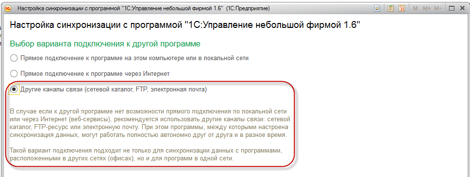
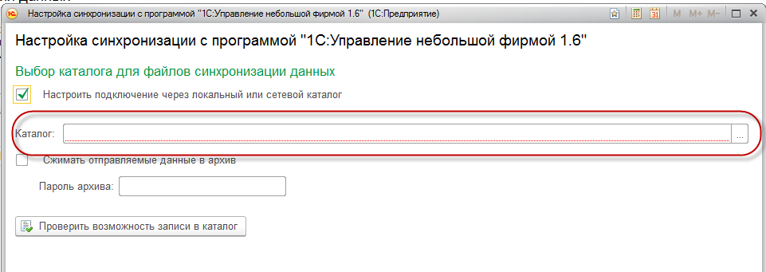
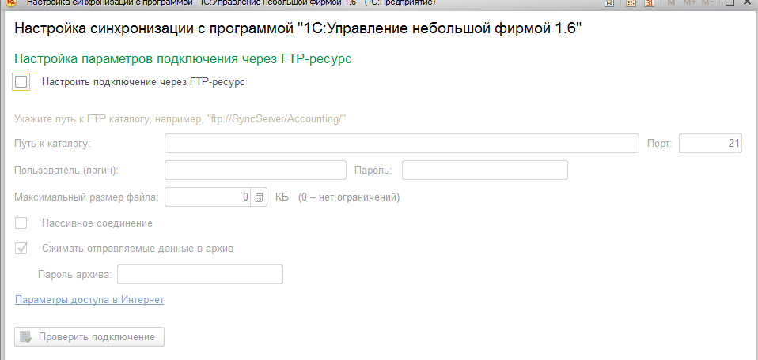
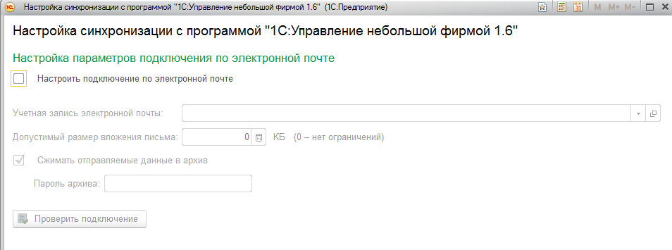
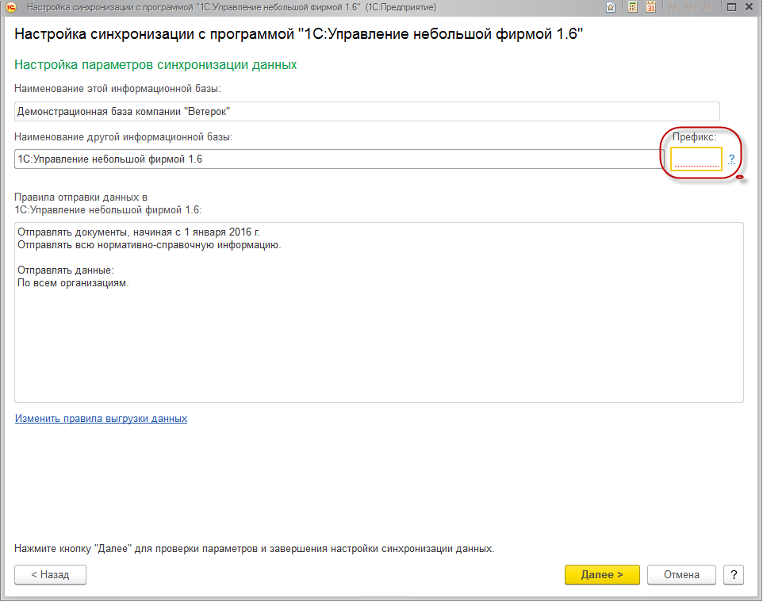
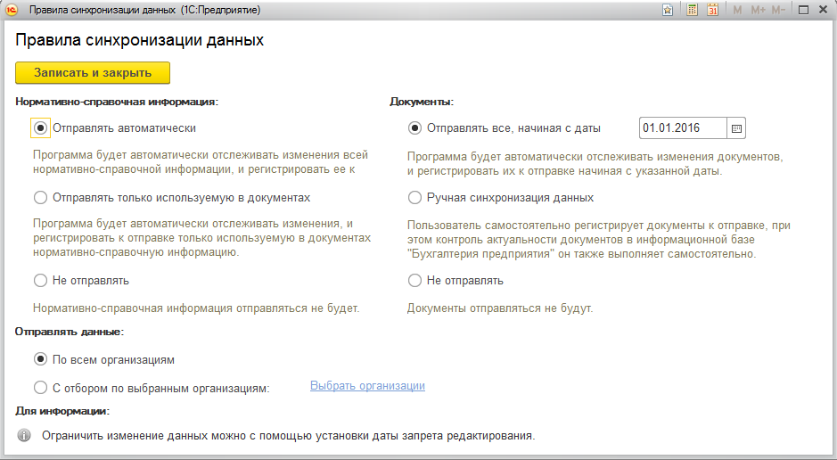
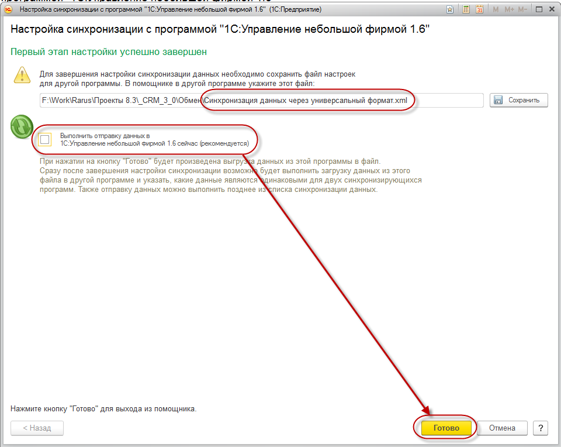

По кнопке "Далее" переходим на следующую страницу мастера. По умолчанию мастер предлагает настроить обмен через локальный или сетевой каталог. Для такого обмена требуется указать локальный или сетевой каталог, который будет доступен для конфигурации, с которой настраивается обмен.

На следующей странице мастера можно настроить параметры подключения через FTP-ресурс.

На следующей странице мастера можно настроить параметры подключения по электронной почте.

Установив параметры подключения, переходим на страницу с настройками параметров синхронизации. Укажем префикс базы, с которой настраивается обмен.
На странице мастера возможно посмотреть и настроить параметры отправки данных из 1С: CRM 3.0:

Для настройки параметров нужно нажать гиперссылку "Изменить правила выгрузки данных" и выбрать варианты синхронизации справочников и документов и нажимаем команду "Записать и закрыть":

При настройке синхронизации данных через локальный или сетевой каталог, мастре настройки не предлагает указать расположение внешней обработки менеджера обмена для программы, с которой идет настройка синхронизации. Это возможно будет проделать позже в конфигурации, с которой настраиватся обмен. Указав все настройки поапдаем на финальную страницу мастера: на
которой указан путь к файлу настроек обмена в другой программе, а так же можно выполнить отправку данных сразу после завершения настройки синхронизации данных по кнопке "Готово".
Шаг 3. Настройка обмена в конфигурации "1С: Бухгалтерия предприятия"